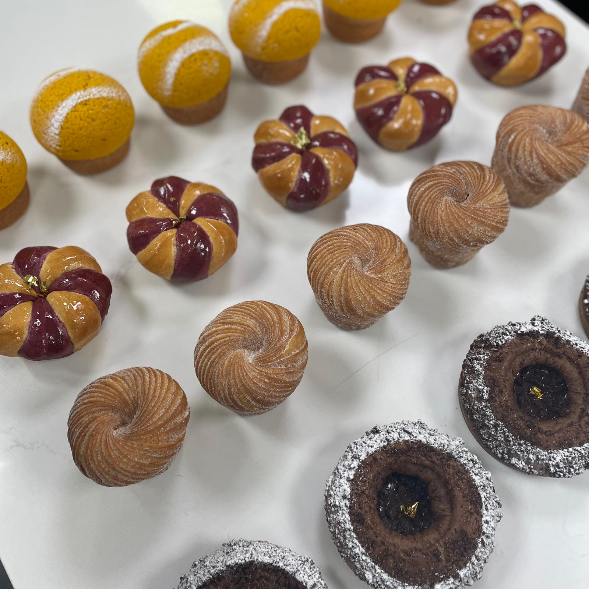
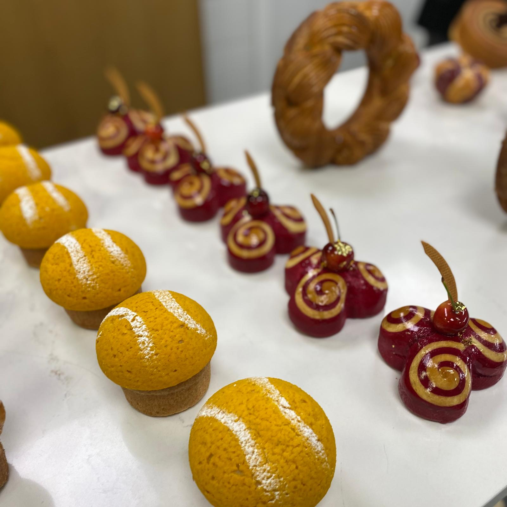
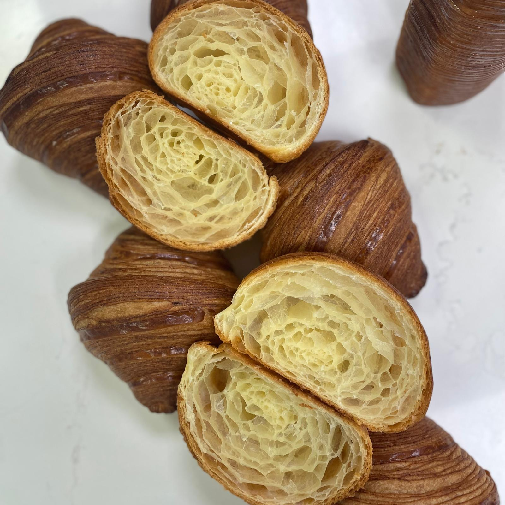
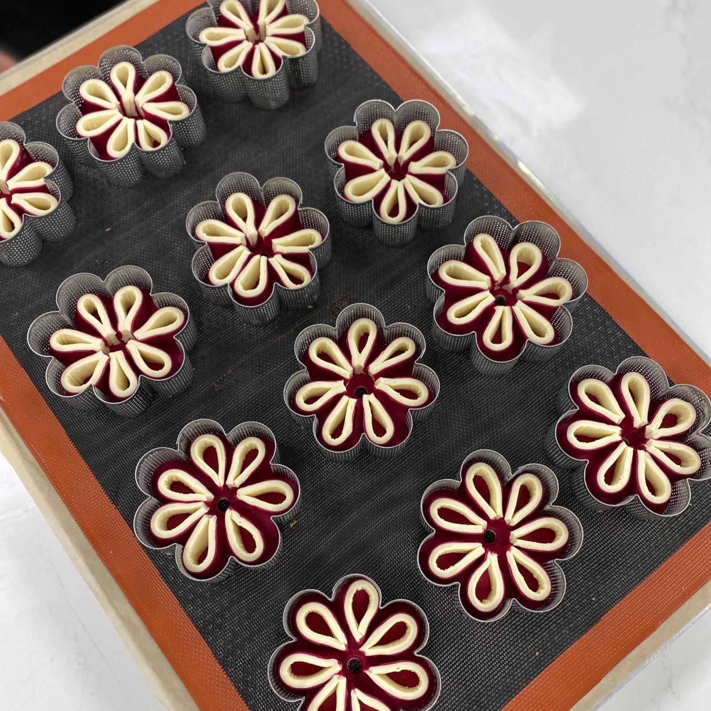
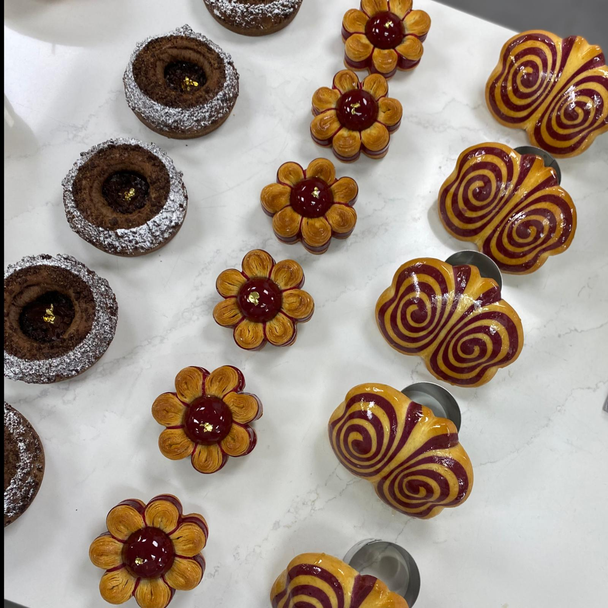

My name is Meitar Ohayon. I am a pastry chef, chocolatier, and instructor of baking workshops. Over the years I have gained a lot of knowledge in a variety of fields: showcase desserts, restaurant desserts, baking bread, working with Tabon, ice cream production, service management, recruiting. In addition, I own an independent business of designed birthday cakes.
In the last seven years, I have been involved in the patisserie business. I wanted to learn another field in order to reach a place where I have options for advancement and growth, to enter a new field, and expand my responsibilities. I found a great interest in the QA (Quality Assurance) world and points of interface between the two fields. In patisserie, attention to detail and perfectionism are required to succeed, focusing on the small "bugs" in a cake or dessert until the product is perfect before it goes to the customer. The same goes for QA, the requirement is quite similar, so I became curious and drawn into this world.
Four years ago I took a pastry course at "Estella" School
click here for more information about "Estella" schoolIn the pastry studies at "Estella", I acquired knowledge of all pastry theory: crispy dough, cakes, creams, tarts, chocolate, restaurant dessert, dough and breads, croissants, savory pastries, mousses...
I worked in several restaurants and patisseries in Israel:
- Sarina Chocolate
- Boulangerie 96
- Kazan Brasserie
- Pop and Pope
- Nomi
I am adding here some pictures of cakes and desserts that I made:


To expand my knowledge in the field, I participated in a training course of a pastry chef - Johan Martin from France. The content of the training was complex pastries that meet the definitions of innovation, beauty, and style. A fascinating training course.
Here are some photos from the training:
    